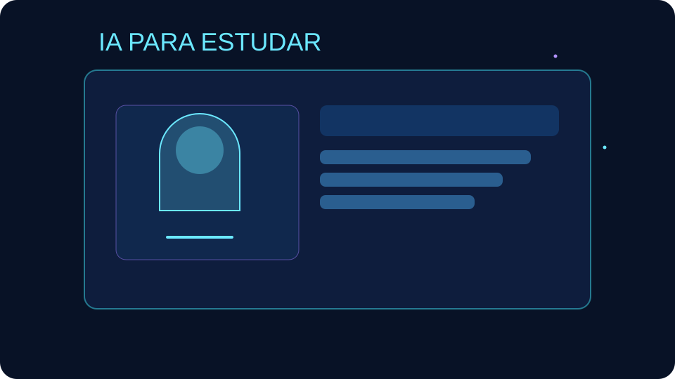
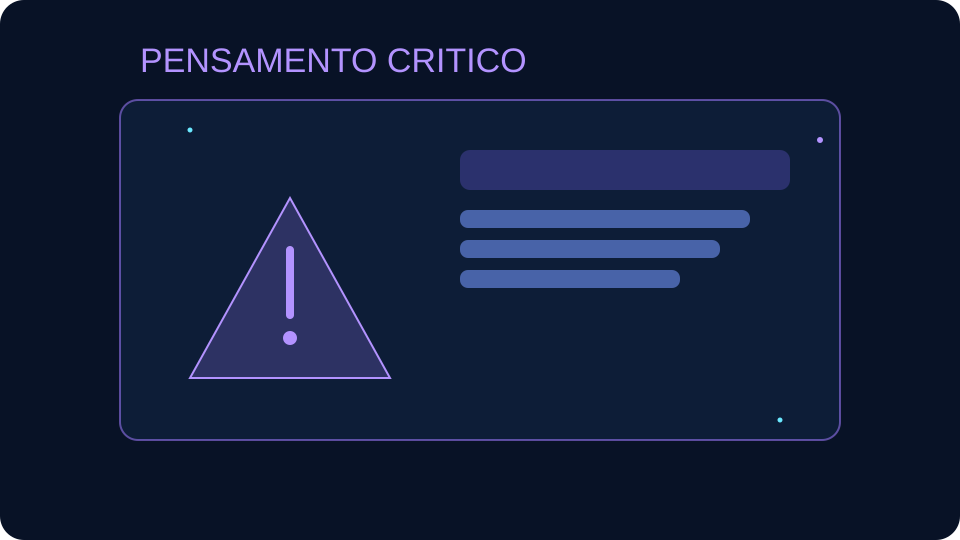

IA Generativa
Cria textos, imagens, audio e ideias com base em exemplos anteriores.
COLEGIO COMETA // TURMA 2° MARTE // 2026
Este projeto apresenta o conceito de IA, explica como ela funciona e mostra como estudantes podem usa-la a favor do aprendizado sem riscos.
A Inteligencia Artificial (IA) e uma area da tecnologia que cria sistemas capazes de realizar tarefas que normalmente exigem inteligencia humana, como compreender linguagem, reconhecer padroes e resolver problemas. A IA nao pensa como uma pessoa: ela analisa dados e calcula respostas provaveis com base no que aprendeu.
Cria textos, imagens, audio e ideias com base em exemplos anteriores.
Encontra padroes em dados para ajudar em previsoes e decisoes.
Presente em tradutores, recomendacoes, mapas e assistentes virtuais.
Modelos de IA sao treinados com grandes volumes de dados. Durante o treinamento, aprendem padroes, relacoes e estruturas a partir de exemplos.
Quando voce faz uma pergunta, a IA gera uma resposta com base nos padroes aprendidos. Ela pode ajudar muito, mas tambem pode errar.
A IA funciona melhor com supervisao humana. E essencial conferir informacoes, comparar fontes e tomar decisoes com pensamento critico.
Nasce o termo "Inteligencia Artificial" na conferencia de Dartmouth.
O computador Deep Blue vence um campeao mundial de xadrez.
AlphaGo supera jogadores de elite em um jogo considerado muito complexo.
Ferramentas de IA apoiam estudo, trabalho e criatividade em escala global.
A IA pode ser uma grande aliada nos estudos quando usada com responsabilidade e limites claros.

Use IA para resumir conteudos, criar perguntas de revisao, montar planos de estudo e receber explicacoes em linguagem simples.
Experimente: "Explique este tema como se eu tivesse 15 anos".

Nao dependa totalmente da IA. Evite copiar respostas prontas: use o apoio da ferramenta e depois escreva com suas proprias palavras.
Regra 70/30: 70% conteudo seu, 30% apoio da IA.
Proteja-se: nao compartilhe dados pessoais, senhas ou fotos privadas e sempre confirme informacoes importantes em fontes confiaveis.
Nunca envie CPF, endereco, telefone ou senha em ferramentas de IA.
Nao. IA apoia tarefas, mas criatividade, etica e pensamento critico continuam humanos.
Nao. Sempre verifique em livros, professores e fontes confiaveis.
Use IA para entender melhor, praticar e revisar, mas produza suas respostas finais.